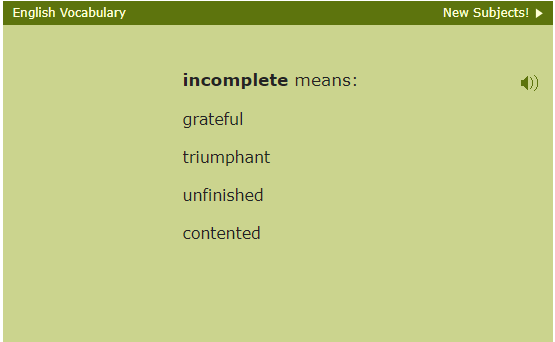
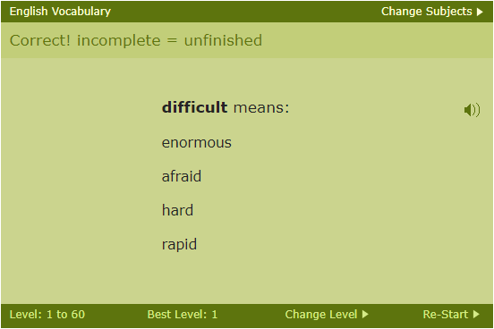

This report had been developed with the purpose of identifying usability issues of Freerice, an online non-profit food donation website, in order to guide the evaluation and redesign of the system. The report entailed information regarding methodologies used in order to ascertain data and conclusions drawn from this data.
The first step in this process was determining the goals of the system as is in order to obtain a better understanding of the purpose of Freerice. After determining the goals of the system we were able to develop objectives to help guide our study’s tasks. The team determined that the research would be guided by the following objectives:
The study adopted two methods: Usability testing and a cognitive walkthrough. The team then developed a series of tasks to drive the usability tests, and a separate set of tasks for the cognitive walkthrough. The purpose of these tasks was to help the team see how users interact with the system when given a task to complete. Through this process we were able to gather data on what steps users took to achieve this goal and how users interact with the system while attempting to complete the given task. This aided in determining whether or not system features are being used as intended and how the system can be improved.
At the time the study was being conducted, Freerice was currently undergoing a restructuring, and as such, certain functions of the website are hard to use. One such example of this is the sign in process. In order to sign up for an account on Freerice, a user must navigate to the new webpage, create and account there, and move back to the original website.
This process takes time, not only because both websites are slow and laggy with this process, but also because there is not a lot of feedback for the input boxes. For example, there is no way of checking if a username is already taken until a user has tried to create an account with that username. Furthermore, many text boxes that need to be filled out take a lot of time to complete or are redundant. Nearly every participant mentioned or experienced lag from the website upon completing this task, which caused further frustration. This makes the process of creating an account, one of the most basic features that a website would need to create a consistent user base, a huge hassle for any incoming users. Furthermore, joining a group is made more difficult by the moving process. While some users reported being able to join a group without trouble, other users found that they were unable to join existing groups without having access codes or creating their own. One user was unable to find where to join groups in the first place. This shows two problems. First is visibility. The ability to join groups should be placed more prominently if the website wants users to interact with that feature more. This is important because fostering a community would help keep users invested for longer.

The second problem is that there is not enough feedback in the process for creating groups. Users aren’t told whether they have successfully joined a group in a way that is clear. Other common actions such as changing the levels of questions being answered are also more complicated than they need to be. Freerice has different tiers of questions that are tied to a difficulty level. The ability for users to select a starting difficulty on the web page is at first hidden to users, despite being a key feature.

The only way to change difficulties is to first answer a question on the easiest difficulty. Then, a small text box in an unclear color and font appears.
This made the ability to choose the level of difficulty for questions seems like an afterthought and would potentially push away users who are looking for more difficult questions to learn from. One of the problems that persisted through each question was difficulty finding where to perform tasks. Important functions are often found in small fonts, hidden away, and in colors that blend into the background.
Some limitations imposed upon our user research were as follows: